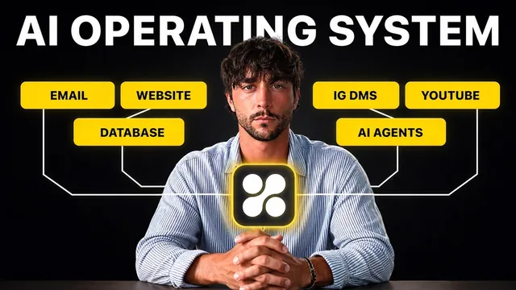

AI로 1인 기업 만드는 법

원본 영상 보기 →
- 데이터를 먼저 구조화해야 AI가 진짜 힘을 발휘해요
- 수동 → 스킬 → 에이전트라는 검증된 순서를 건너뛰면 실패해요
- 가장 가치 있는 자산은 이미 갖고 있던 대화 기록이에요
한 줄 요약
AI 자동화 컨설턴트 Liam Ottley가 실제 고객 Alan의 사례를 공개해요. 인스타그램 DM과 스프레드시트에 흩어진 리드 데이터를 검색 가능한 데이터베이스로 만들고, HyperAgent라는 노코드 플랫폼으로 "AI 운영체제"를 구축해 리드 스코어링부터 메시지 초안 작성, 자동 발송까지 완전 자동화하는 전체 과정을 보여줍니다.
전체 내용 정리
인스타그램 DM과 스프레드시트에 흩어진 데이터가 매일 돈을 새게 만들어요
Liam Ottley는 25,000달러를 받고 만들어주는 시스템을 이번 영상에서 무료로 공개한다며, 실제 고객 Alan의 사례로 시작합니다.
Alan은 실재하는 사업체를 운영하는데요. 매일 돈이 조용히 새고 있었지만 본인은 눈치채지 못하고 있었어요.
그는 대부분의 사업을 인스타그램 DM과 스프레드시트로 운영했습니다. 매일 새로운 대화가 쌓이지만 아무도 붙잡아두지 않아서 그대로 흩어져 사라졌죠.
Alan은 더 많은 도달과 더 많은 팔로워가 필요하다고 확신했어요. 하지만 실제로 필요한 건 이미 손안에 있는 것을 활용하는 일이었습니다.
그의 사업에서 가장 가치 있는 자산은 "관심 있다"고 말한 모든 사람과의 모든 대화였어요. 그런데 이 정보가 검색도 안 되는 앱 안에 갇혀 있어서, 사실상 존재하지 않는 것과 마찬가지였죠.
첫 번째 층: 코드 없이 말로 쌓는 컨텍스트 뱅크
시스템은 바닥부터 정확한 순서로 한 층씩 쌓아 올립니다. 첫 번째 층은 빌드처럼 느껴지지도 않아요. 클릭할 것도 코드도 없이 그냥 말하는 것이 전부니까요.
Glydo 같은 음성 전사 도구를 켜고 새 노트를 연 다음, 사업이 무엇을 하는지, 목표와 꿈, 도전 과제, 경쟁자, 아이디어, 강점과 약점까지 전부 말로 쏟아내면 됩니다.
순서가 정돈되어 있을 필요도 없고 말이 되지 않아도 상관없어요. 의식의 흐름대로 그냥 다 뱉어내는 게 핵심입니다.
말하기는 타이핑보다 약 3배 빠르거든요. 손 대신 음성으로 프롬프트를 입력하는 것만으로 매주 약 6시간을 돌려받을 수 있어요.
이 컨텍스트 뱅크를 완성하는 마지막 단계는 가장 많이 쓰는 Claude나 ChatGPT 데이터를 내보내는 겁니다. 이 데이터는 나중에 워크스페이스를 조립할 때 방금 만든 컨텍스트 위에 층층이 쌓여요.
두 번째 층: 흩어진 데이터를 검색 가능한 데이터베이스로 바꾸기
두 번째 층은 지루하지만 실제 데이터를 구조화하는 작업이에요.
대부분의 사람이 AI스럽지 않다는 이유로 건너뛰는 바로 그 부분이, 상위 1% AI 사용자와 상위 0.1% 사용자를 가르는 핵심입니다.
대부분의 사업 데이터는 십여 개의 앱에 흩어져 있고, AI가 읽거나 편집하기 어려운 형식으로 저장돼 있잖아요.
Alan의 경우 발리 이벤트 신청 폼 응답 수백 건이 스프레드시트에, 잠재 고객과 나눈 인스타그램 DM 수천 건이 AI가 손댈 수 없는 형태로 쌓여 있었어요. 이걸 검색 가능한 데이터베이스로 바꾸는 작업이 모든 걸 열어젖혔습니다.
Supabase에 이 데이터를 넣고 나면 이런 질문에 AI가 답할 수 있게 돼요. "지난 한 달 동안 누구와 이야기했는데 후속 연락을 하지 않았지?" 사람 손으로는 사실상 불가능했던 질문이죠.
이때 핵심 기법이 있어요. 신청 폼 응답에 있는 인스타그램 핸들과 DM 데이터의 인스타그램 핸들을 관계형 필드로 서로 연결해, AI가 한 사람의 신청 내역과 대화 전체를 한 번에 찾아 분석할 수 있게 만드는 겁니다.
세 번째 층: 모든 걸 하나로 묶는 AI 워크스페이스, HyperAgent
세 번째 층은 컨텍스트와 데이터라는 두 기초 조각을 하나로 묶어주는 워크스페이스예요.
영상은 이걸 Claude Code로 직접 만들 수도 있다고 하면서도, 고통스러운 작업이라고 설명합니다. API 키를 일일이 찾아다니고 Google Cloud 프로젝트를 세우고 복잡한 컨텍스트 관리 시스템을 짜는 데 하루 종일 걸리니까요.
좋은 비유가 나와요. 부품 더미에서 직접 조립해야 하는 조립식 PC에 비유하면, 영상에서 소개하는 HyperAgent라는 플랫폼은 상자를 열자마자 몇 분 만에 작동하는 맥북에 가깝다고요.
HyperAgent에서는 좌측 하단 integrations 메뉴에서 Supabase를 몇 번의 클릭만으로 연결할 수 있어요. Gmail 같은 즐겨 쓰는 앱들도 같은 방식으로 붙여서, 다시는 그 앱들을 따로 열 필요가 없게 만듭니다(앱을 오가며 낭비하는 시간이 평균 주 4시간이라고 언급돼요).
여기에 앞서 만든 컨텍스트 뱅크와 스프레드시트를 새 프로젝트로 드래그 앤 드롭하고, "이 신청서와 DM 대화 기록을 인스타그램 핸들 기준으로 서로 연결해서 데이터베이스에 넣어줘"라고 음성으로 지시하면 됩니다. HyperAgent가 Opus 4.8 같은 모델로 플랜을 세우고 데이터베이스를 직접 구축해요.
연결이 끝난 뒤 "리드 한 명을 찾아서 신청 내용과 인스타그램 대화 전체를 요약해줘"라고 테스트했는데요. 점수 95점에 9,600달러 규모 거래 가능성이 있는 Diego Fernandez라는 리드의 신청 정보와 대화 전체, 다음 행동 제안까지 한 번에 받아볼 수 있었습니다.
수동 탐색에서 스킬로: 굿모닝 스킬이 리드를 스코어링하고 이메일 초안까지 써줘요
기초와 워크스페이스가 완성되면 다음은 실제로 돈을 만드는 부분이에요. 데이터베이스에 있는 모든 걸 읽고 오늘 무엇에 신경 써야 하는지 알려주는, 아무도 시간을 들여 하지 않는 그 일이죠.
자동화의 핵심은 처음엔 이 워크스페이스를 수동으로 계속 써보는 겁니다. "내 영업사원 Jimmy가 이번 달 실적이 안 좋은데, 지난달과 이번 달 통화 기록을 다 뽑아서 비교 분석하고 리포트를 줘" 같은 질문을 던져보는 거예요. 이렇게 반복되는 수동 작업을 발견하면, 그것을 스킬로 바꾸는 단계로 넘어갑니다.
영상은 Alan을 위해 만든 "굿모닝(/GM)" 스킬을 예로 들어요.
이 스킬은 데이터베이스의 모든 대화를 읽고 분석해서, 티켓 구매에 얼마나 가까운지를 나타내는 "hotness 점수"로 각 리드를 채점합니다. 그리고 구매 가능성이 가장 높은 사람들의 목록과, 각각에게 보낼 첫 메시지 초안까지 함께 건네줘요.
이 스킬은 평범한 영어 문장으로 HyperAgent와 대화하며 만들었을 뿐, 코드는 한 줄도 쓰지 않았습니다. 완성된 뒤에는 세션에서 "/GM"이라고 입력하는 것만으로 리드 추출부터 분석, 점수화, 초안 작성까지 전체 과정이 자동으로 실행돼요.
결과 화면에는 hotness 점수 기준 상위 10명의 초안 이메일이 스프레드시트 형태로 정리됩니다. "다 보내" 혹은 "다 보내고 Grace도 추가해" 같은 명령으로 실제 발송까지 이어지고요. 발송 전에는 항상 사람의 승인을 거치도록 설계돼 있어요.
스킬에서 완전자동 에이전트로, 그리고 그 위의 리더보드 앱까지
스킬은 여전히 사람이 버튼을 눌러야 하는 "루프 안(in the loop)" 단계예요.
영상은 대부분의 사람이 여기서 멈춘 채 스스로 잘하고 있다고 착각한다고 지적하며, 마지막 단계인 에이전트로 넘어갑니다.
에이전트는 스킬을 백그라운드에서 자동으로 실행해, 사람이 트리거를 누르는 순간 자체를 없애줘요.
Alan을 위해 만든 사례는 "발리 이벤트 컨시어지" 에이전트입니다. 신청 폼에 리드가 응답을 남기면 에이전트가 그 내용을 분석하고 웹에서 그 사람에 대한 정보를 조사한 뒤, 기준에 맞는 좋은 리드라고 판단되면 예약 링크가 담긴 개인화된 이메일을 자동으로 발송하는 구조예요.
이 에이전트는 HyperAgent의 "Create with chat" 기능으로 시스템 프롬프트와 데이터베이스 연결, 예약 링크까지 대화형으로 구축했습니다. 스케줄 방식 대신, 신청서가 제출되는 즉시 Supabase에 데이터가 들어가면서 이벤트가 발생하는 웹훅으로 완전 자동화됐어요.
영상 속에서 직접 신청 폼을 작성해 테스트하자, 에이전트가 관련 정보를 찾아내 95% 적합도로 승인 판정을 내리고 예약 링크가 담긴 이메일을 자동으로 발송하는 장면이 나옵니다.
여기에 더해 매일 밤 굿모닝 스킬을 스케줄로 돌려 모든 리드를 재채점하고, 그 결과를 한눈에 보여주는 리더보드 앱까지 바이브 코딩으로 얹었어요. Alan은 이제 개발자 없이 매일 아침 스마트폰으로 이 앱을 열어 누구에게 연락해야 하는지 확인하고 메시지를 보냅니다.
이렇게 구축한 시스템 덕분에 Alan은 주당 약 16시간을 돌려받았어요. 그리고 몇 달 전에 잊고 있던 리드 한 명이 시스템이 작성한 메시지를 받은 지 24시간도 안 돼, 5자리 숫자 규모의 거래로 이어졌습니다.
핵심 인사이트
- 데이터를 먼저 구조화해야 AI가 진짜 힘을 발휘해요: 화려한 자동화보다 먼저, 흩어진 스프레드시트와 DM을 검색 가능한 데이터베이스로 바꾸는 지루한 작업이 AI 사용자의 상위 1%와 0.1%를 가릅니다.
- 수동 → 스킬 → 에이전트라는 검증된 순서를 건너뛰면 실패해요: 워크스페이스를 충분히 수동으로 써보며 반복 작업을 발견하고, 그걸 스킬로 다듬은 뒤에야 에이전트로 넘기는 단계를 거쳐야 합니다. 곧바로 에이전트부터 던지면 제대로 작동하지 않아요.
- 가장 가치 있는 자산은 이미 갖고 있던 대화 기록이에요: 새로운 리드나 팔로워를 좇기 전에, 이미 "관심 있다"고 말한 사람들과의 과거 대화를 검색 가능하게만 만들어도 즉시 매출로 이어질 수 있습니다.
오늘 당장 해볼 것
- Glydo 같은 음성 전사 도구로 노트를 열고, 사업 전체 개요·목표·강점과 약점을 10~15분간 말로 쏟아내 컨텍스트 뱅크 초안을 만들어보세요.
- 인스타그램 DM 내보내기(Meta 데이터 내보내기)와 가장 최근 신청서·문의 스프레드시트를 한 폴더에 모아, 흩어진 데이터부터 한곳에 모으세요.
- Supabase 무료 프로젝트를 만들어 위 스프레드시트 하나를 업로드해보고, "지난 한 달간 연락했지만 후속 조치를 안 한 사람"처럼 지금까지 손으로는 답할 수 없었던 질문을 AI에게 던져보세요.